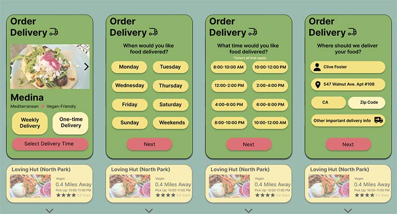
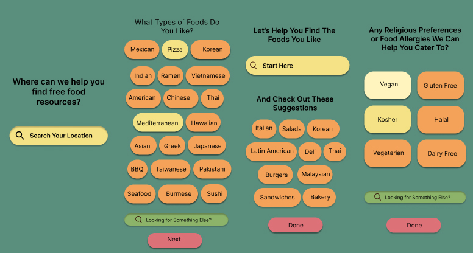

Low-income single-parent families face significant vulnerability and often struggle with food insecurity, with 32.1% of households below the federal poverty line experiencing food insecurity in 2021 according to the USDA. In order to address this issue, I aimed to design an app prototype using UI/UX principles.
Employing a comprehensive six-step design process, I successfully developed an app prototype with a focus on three key user tasks. This mobile app establishes partnerships with local restaurants and stores in the vicinity of the user, offering end-of-day food to low-income single-parent families. Additionally, the app provides direct links to resources for low-income food assistance, allowing users to conveniently sign up for an EBT card within the app and access local food banks. It also includes direct links to SNAP, WIC, and other relevant benefits. To cater to individual preferences and dietary restrictions, the app offers personalized recommendations and customization options.
Furthermore, the app incorporates home delivery food boxes and assistance for those facing limited mobility and transportation challenges. By conducting a SWOT analysis, engaging in UX research through persona creation, developing user flows and wireframes, and conducting usability testing, I successfully created an app prototype named "Food Forward" to showcase the potential of the product.
